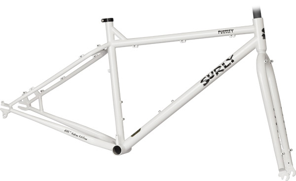

Pugsley Frame
By now you know that Pugsley was created to go where standard ‘all terrain’ bikes flounder. The floatation and traction afforded by large-volume, low-pressure tires can get you over and through otherwise unrideable terrain, such as sand, mud, wet rocks and roots, ice, and many kinds of snow. Wide, low-pressure tires are easier than standard tires on whatever terrain you pass over because they don’t dig in as easily.
The Pugsley frame has horizontal rear dropouts with a derailleur hanger. You can set it up with derailleurs or an internally geared hub, or set it up as a singlespeed or fixed-gear. This isn’t just a nice option. In certain situations, extra weight and the potential for a complex part to fail isn’t just a pain. It can be deadly serious business. The stock fork accepts a 135mm rear mountain hub, just like the frame. This makes it easier to install and remove the wheel (a big tire on a big rim benefits from a wide opening), but more to the point also allows front and rear wheel interchangeability. This means you can have another full gear cluster, a singlespeed or a fixed-gear wheel option should something go wrong with your freehub body or derailleurs. In other words, it’s one more option for getting you back out from whatever situation you’ve gotten yourself into.
We have until now offered the Pugsley only as a frameset, but we’re now offering a complete bike option. Like our other complete bike models, it sports a nice mix of components chosen for their durability, affordability, and suitability to the task at hand, which is to say it’ll get you out there, off the beaten path, and back under your own power, hopefully with enough extra cash to buy a round at the bar when you’re done. Cheers to that.
ETA of new white, disc brake only frames: early October 2010
Colors: Snowblind
Weight: 18" = 2,570g (5.6 lb)


![[Image unavailable in this copy]](https://web.archive.org/web/20110226135321id_/http://surlybikes.com:80/images/sized/uploads/frames/FM3181-01-125x125.jpg){kind=link}

![[Image unavailable in this copy]](https://web.archive.org/web/20110226135321id_/http://surlybikes.com:80/images/sized/uploads/frames/FM3181-02-125x125.jpg){kind=link}

![[Image unavailable in this copy]](https://web.archive.org/web/20110226135321id_/http://surlybikes.com:80/images/sized/uploads/frames/FM3181-03-125x125.jpg){kind=link}

![[Image unavailable in this copy]](https://web.archive.org/web/20110226135321id_/http://surlybikes.com:80/images/sized/uploads/frames/FM3181-04-125x125.jpg){kind=link}
![[Image unavailable in this copy]](https://web.archive.org/web/20110226135321id_/http://surlybikes.com:80/images/template_images/geo_top.jpg){kind=link}
Geometry
[Image unavailable in this copy]![[Image unavailable in this copy]](https://web.archive.org/web/20110226135321id_/http://surlybikes.com:80/uploads/bikes/pugsley2011_geo.gif){kind=link}
| Switch to mm | 16" | 18" | 20" | 22" | |
|---|---|---|---|---|---|
| Seat Tube Length (Center-Top) |
16.0 | 18.0 | 20.0 | 22.0 | |
| Top Tube Length (Center-Center) |
21.8 | 22.3 | 23.0 | 23.6 | |
| Effective Top Tube Length (Center-Center) |
22.9 | 23.5 | 24.0 | 24.6 | |
| Head Tube Angle | 70.5 | 70.5 | 70.5 | 70.5 | |
| Seat Tube Angle | 72.0 | 72.0 | 72.0 | 72.0 | |
| BB Drop | 2.2 | 2.2 | 2.2 | 2.2 | |
| Chainstay Length | 17.6 | 17.6 | 17.6 | 17.6 | |
| Wheelbase | 42.0 | 42.6 | 43.2 | 43.8 | |
| Standover Height | 29.3 | 30.5 | 31.7 | 33.1 | |
| Head Tube Length | 4.0 | 4.4 | 5.1 | 5.9 | |
| Fork Length | 17.6 | 17.6 | 17.6 | 17.6 | |
| Fork Rake | 1.7 | 1.7 | 1.7 | 1.7 | |
| Frame Weight | 5.6 |
**Standover height measured using Surly Endomorph 3.7” tire measuring 740mm in diameter
| Switch to inches | 16" | 18" | 20" | 22" | |
|---|---|---|---|---|---|
| Seat Tube Length (Center-Top) |
406.4 | 457.2 | 508.0 | 558.8 | |
| Top Tube Length (Center-Center) |
554.3 | 566.5 | 581.9 | 600.0 | |
| Effective Top Tube Length (Center-Center) |
580.9 | 595.6 | 610.1 | 625.0 | |
| Head Tube Angle | 70.5 | 70.5 | 70.5 | 70.5 | |
| Seat Tube Angle | 72.0 | 72.0 | 72.0 | 72.0 | |
| BB Drop | 55.0 | 55.0 | 55.0 | 55.0 | |
| Chainstay Length | 448.1 | 448.1 | 448.1 | 448.1 | |
| Wheelbase | 1067.4 | 1082.4 | 1097.3 | 1112.7 | |
| Standover Height | 754.1 | 773.5 | 805.4 | 839.7 | |
| Head Tube Length | 102.0 | 112.0 | 130.0 | 150.0 | |
| Fork Length | 447.0 | 447.0 | 447.0 | 447.0 | |
| Fork Rake | 43.0 | 43.0 | 43.0 | 43.0 | |
| Frame Weight | 5.6 |
**Standover height measured using Surly Endomorph 3.7” tire measuring 740mm in diameter
Frame Highlights
| Tubing: | Surly 4130 CroMoly steel. Main triangle double-butted. TIG-welded |
|---|---|
| Rear dropouts: | Surly horizontal dropouts with derailleur hanger, 135mm-spaced, offset 17.5mm |
| Brake compatibility: | 51mm IS disc mounts frame and fork |
| Braze-ons: | Dual water bottle mounts, toptube cable housing guides for use with continuous housing, fender and rack eyelets |
| Seatpost diameter: | 27.2mm |
| Seatpost clamp: | 30mm Surly stainless, included. Silver |
| Headset: | 1-1/8" threadless |
| Front Derailleur: | E-type |
| Bottom bracket shell: | 100mm wide, 1.37" x 24t |
| Chainring clearance: | Compact triple: 22-32-44t |
| Fork: | Suspension-corrected (100mm travel). 447mm axle to crown, tapered straight blade, 4130 CroMoly. 51mm IS REAR disc mount. 135mm-spaced dropouts, 17.5mm offset |
| Color: | Snowblind |
| Weight: | 18" = 2,570g (5.6 lb) Fork: uncut = 1.114g (2.52 lb) |
![[Image unavailable in this copy]](https://web.archive.org/web/20110226135321id_/http://surlybikes.com:80/images/template_images/geo_bottom.jpg){kind=link}